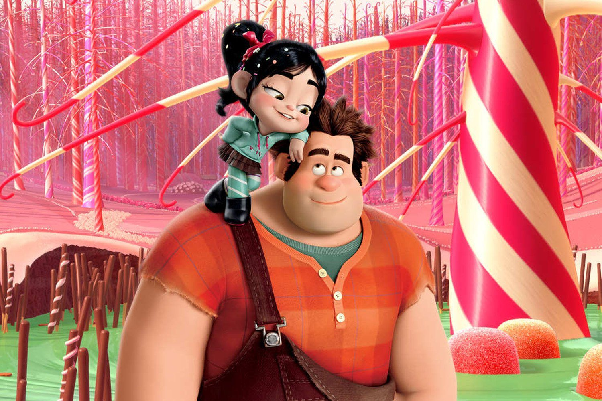

About Ralph
Ralph is a video game bad guy from a movie wanting to save the arcade. He meets some cool characters along the way. And becomes a good guy. He also likes befriending cool glitchy girls.
Ralph and Vanellope von Schweetz.
Ralph’s characteristics
- He’s strong
- He’ kind
- He’ big
- He likes glitchy girls and takes no nonsense